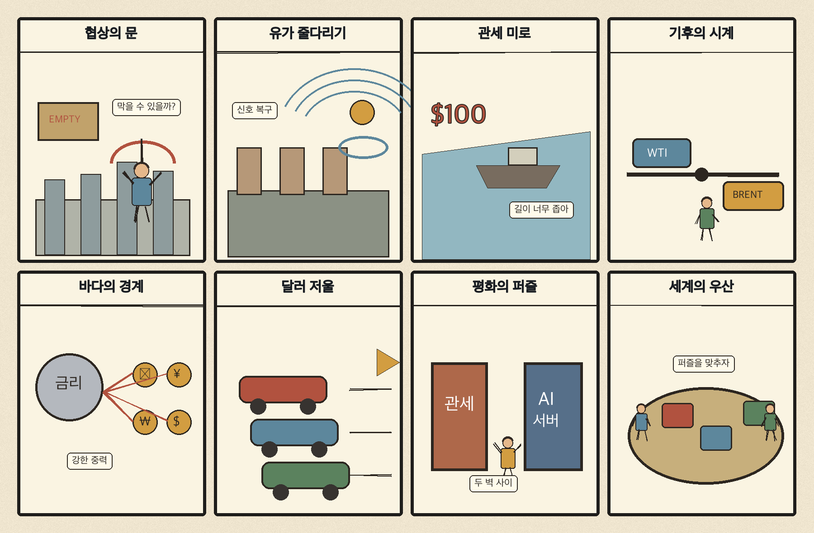
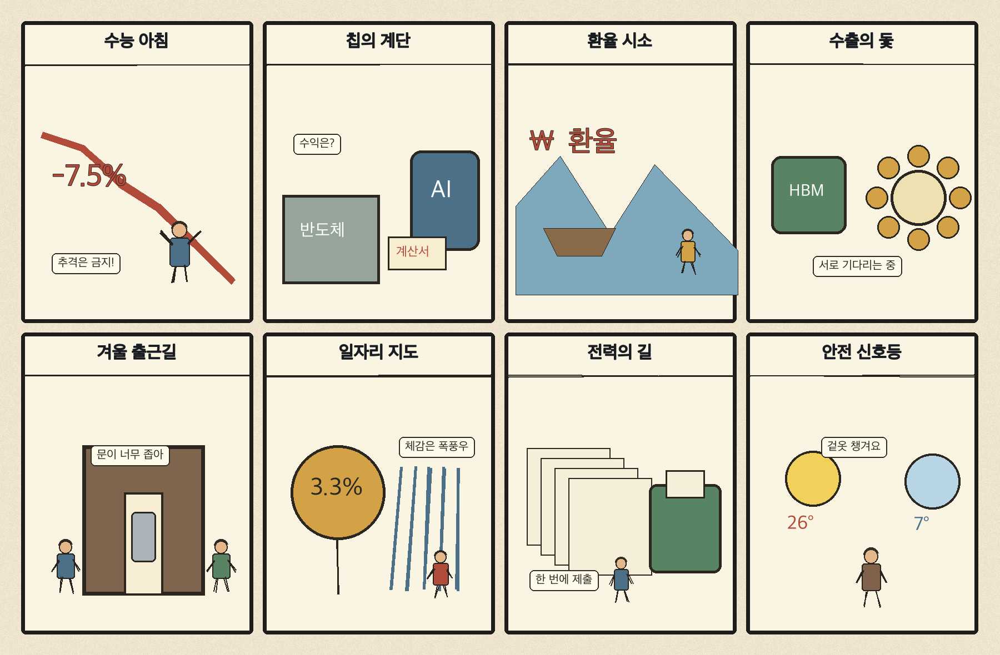

01
ARM · 191.70→203.36달러 · +6.08%
내용요약 시가 대비 +6.08%로 조사군 최상위 상승을 기록했습니다.
예상여파 반도체 설계 생태계의 위험선호를 보여주지만 단기 급등 추격에는 주의가 필요합니다.
MORNING_BRIEFING_20261112
작성 시각: 2026-11-12 06:35 KST · 직전 미국 정규장과 2026-11-12 KST 당일 공개 기사 기준
11월 11일 뉴욕증시는 다우 +0.49%, S&P 500 +1.31%, 나스닥 +1.60%로 상승했습니다. ARM·마이크론·오라클이 강했지만 메타·마이크로소프트·아마존은 약세여서 기술주 내부 차별화가 뚜렷했습니다. 한국 시장은 같은 날 KOSPI +2.60%, KOSDAQ +5.62%로 급반등해 오늘은 추가 상승보다 과열 완화와 외국인 수급 지속 여부가 핵심입니다.
| 지수 | 종가 | 등락률 | 한국 증시 시사점 |
|---|---|---|---|
| 다우존스 | 52,486.49 | +0.49% | 경기민감주까지 완만한 위험선호 |
| S&P 500 | 7,619.38 | +1.31% | 성장주와 반도체 심리에 우호적 |
| 나스닥 종합 | 25,466.19 | +1.60% | 성장주와 반도체 심리에 우호적 |
미국 성장주 지수의 상승은 국내 반도체 심리에 우호적입니다.
전일 급반등 뒤에는 시초가 추격보다 변동성 안정 확인이 우선입니다.
마이크론 +4.38%, ARM +6.08%로 반도체 내부 순환이 이어졌습니다.
메타·마이크로소프트·아마존 약세로 지수 상승의 폭은 고르지 않았습니다.
11월 10일 보고서는 수급·컨센서스·30건 이상 유사 조건 표본을 모두 확보하지 못해 공식 추천을 내지 않았습니다. 11월 11일 장에 대해 사후 종목을 추가하지 않습니다.
| 시장 | 종가 | 등락률 | 기준 |
|---|---|---|---|
| KOSPI | 5,375.36 | +2.60% | 11월 11일 · 시가 대비 +3.18% |
| KOSDAQ | 705.10 | +5.62% | 11월 11일 · 시가 대비 +5.48% |
| 다우존스 | 52,486.49 | +0.49% | 미국 11월 11일 정규장 |
| S&P 500 | 7,619.38 | +1.31% | 미국 11월 11일 정규장 |
| 나스닥 종합 | 25,466.19 | +1.60% | 미국 11월 11일 정규장 |
ARM +6.08%, 마이크론 +4.38%, AMD +1.81%였습니다.
오라클 +3.30%, 로켓랩 +2.93%, 앱러빈 +2.60%였습니다.
메타 -2.78%, 아마존 -2.60%, 마이크로소프트 -2.45%였습니다.
크라우드스트라이크 -2.67%, 브로드컴 -1.43%, 퀄컴 -0.89%로 상대 부진했습니다.
내용요약 시가 대비 +6.08%로 조사군 최상위 상승을 기록했습니다.
예상여파 반도체 설계 생태계의 위험선호를 보여주지만 단기 급등 추격에는 주의가 필요합니다.
내용요약 시가 대비 +4.38%로 메모리 강세를 이끌었습니다.
예상여파 HBM·메모리 기대가 국내 반도체 심리에 우호적으로 연결될 수 있습니다.
내용요약 시가 대비 +3.30%로 상승했습니다.
예상여파 AI 인프라와 클라우드 투자 기대가 소프트웨어·데이터센터 공급망으로 확산할지 주목됩니다.
내용요약 시가 대비 -2.78%로 조사군 최하위권이었습니다.
예상여파 지수 상승 중 대형 플랫폼 약세는 기술주 내 선택적 순환을 보여줍니다.
내용요약 시가 대비 -2.67%로 하락했습니다.
예상여파 보안 소프트웨어가 반도체 중심 랠리에서 소외되며 성장주 내부 온도 차가 커졌습니다.
미국 나스닥 상승과 마이크론·ARM 강세는 국내 반도체 투자심리에 우호적입니다. 다만 국내 KOSDAQ이 전일 5.62% 급등했고 미국 대형 플랫폼주는 동반 상승하지 않았습니다. 오늘은 시초가 갭보다 외국인 현·선물 수급, 전일 종가 유지, 반도체 이외 업종으로의 확산 여부를 먼저 확인해야 합니다.
오늘은 추천 없음 — 현금 관망
전일 국내 시장 급반등 뒤 개별 종목의 수급·컨센서스·30건 이상 유사 조건 표본을 함께 확보해 종합점수 75점·상승확률 60%·예상 손익비 1.5를 모두 검증한 종목이 없습니다. 장전 반도체 호재만으로 확률과 점수를 만들지 않습니다.
관심 연결종목 HBM·전력반도체·산업용 AI는 관찰 대상일 뿐 매수 추천이 아닙니다. 장 초반 과도한 갭 상승 종목은 추격매수를 금지합니다.
전일 반등을 이어갈 순매수 동력이 남아 있는지 확인합니다.
KOSPI 5,375선과 KOSDAQ 705선 부근의 지지 여부를 봅니다.
메모리·설계주 강세가 국내 장비·소재로 확산하는지 살핍니다.
이란 변수에 따른 유가 반등과 원화 움직임을 함께 점검합니다.
핵심 요약: AI 경쟁이 모델 투자, HBM4 양산, 전력반도체, 산업용 휴머노이드로 동시에 확장되고 있습니다. 뉴욕 시장에서는 ARM과 마이크론이 강했지만 대형 플랫폼은 엇갈려 공급망별 선별이 중요합니다.
내용요약 온세미가 실리콘카바이드 전력반도체 신제품의 전력 밀도와 효율 개선을 소개했다는 보도입니다.
예상여파 AI 데이터센터의 전력 효율 경쟁이 서버칩에서 전력변환 부품까지 넓어질 수 있습니다.
내용요약 앤트로픽의 상장 가능성과 엔비디아·구글의 대규모 투자 관측을 다룬 기사입니다.
예상여파 대형 자금 유입은 생성형 AI 경쟁을 가속하지만 기업가치와 수익성 검증 부담도 키울 수 있습니다.
내용요약 TSMC가 오픈AI와 앤트로픽에 각각 투자하며 핵심 고객 생태계를 강화한다는 보도입니다.
예상여파 파운드리와 AI 모델 기업의 결속이 깊어지면 반도체 공급망의 장기 물량 확보 경쟁이 거세질 수 있습니다.
내용요약 SK하이닉스의 HBM4 수율이 양산 안정화 단계에 가까워졌다는 보도입니다.
예상여파 차세대 고대역폭메모리 공급 가시성이 높아지면 국내 메모리 생태계에 우호적일 수 있습니다.
내용요약 씨메스로보틱스가 내년 제조 현장에 휴머노이드 투입을 추진한다는 보도입니다.
예상여파 로봇 경쟁의 초점이 시연에서 생산성·안전성·투자회수 검증으로 이동할 수 있습니다.
핵심 요약: 세계 무역의 AI 편중 경고와 철강 관세 장기화 가능성이 공급망 부담을 키우는 가운데, 이란·호르무즈 긴장으로 유가가 반등했습니다. 미·중 외교 대화는 완충재지만 중동 갈등은 다자 외교에도 영향을 주고 있습니다.
내용요약 AI 관련 품목이 세계 수출 증가분에서 차지하는 비중이 지나치게 높아졌다는 분석입니다.
예상여파 AI 투자 둔화 시 반도체와 무역 의존 국가의 경기 변동성이 함께 확대될 수 있습니다.
내용요약 이란의 핵물질 반출 거부와 호르무즈 선박 공격 속에 국제유가가 반등했다는 보도입니다.
예상여파 에너지 가격과 해상운임 상승은 물가 하락 속도를 늦추고 위험자산 변동성을 키울 수 있습니다.
내용요약 US스틸 경영진이 미국의 철강 관세 50% 유지를 주장했다는 보도입니다.
예상여파 고율 관세가 장기화하면 철강 수입 비용과 글로벌 공급망 재편 압력이 이어질 수 있습니다.
내용요약 APEC을 앞두고 미국과 중국 외교수장이 협력과 이견 관리를 논의했다는 보도입니다.
예상여파 대화 지속은 무역 불확실성을 낮추지만 구체적 합의가 나오기 전까지 경계감은 남을 수 있습니다.
내용요약 유엔 기후회의장에서 가자지구 피해 사진이 전시되며 튀르키예가 이스라엘을 비판했다는 보도입니다.
예상여파 기후 외교 무대에서도 중동 갈등이 부각되며 다자 협상의 의제 집중도가 낮아질 수 있습니다.

핵심 요약: 국내 증시는 반도체 중심으로 반등했지만 높은 변동성이 이어지고 있습니다. AI의 산업 현장 적용과 K콘텐츠 기반 소비재 수출, B20 경제외교가 성장 의제로 부상했고, 영하권 아침과 미세먼지에도 대비해야 합니다.
내용요약 국내 증시가 미국발 긴축 우려에도 반도체를 중심으로 상승했지만 불안이 남았다는 진단입니다.
예상여파 반등 지속 여부는 외국인 수급과 환율, 반도체 대형주의 장중 흐름에 달릴 수 있습니다.
내용요약 국내 AI 경쟁력이 GPU 보유량보다 산업 현장의 실제 적용 성과에서 갈릴 것이라는 분석입니다.
예상여파 제조·물류·서비스 현장의 생산성 개선 사례가 AI 투자 평가의 핵심 기준이 될 수 있습니다.
내용요약 한국무역협회가 K콘텐츠 확산이 소비재 수출에 미치는 동태 효과를 분석한 보고서를 냈습니다.
예상여파 콘텐츠 인지도가 식품·화장품 등 수출 계약과 반복 구매로 연결되는지가 중요합니다.
내용요약 한국 경제계가 미국 B20 무대에서 선진국과 신흥국을 잇는 역할을 강조했다는 보도입니다.
예상여파 2028년 G20 준비와 함께 민간 경제외교 및 공급망 협력의 접점이 넓어질 수 있습니다.
내용요약 아침 최저기온이 영하 2도까지 내려가고 미세먼지도 나쁠 것으로 예보됐습니다.
예상여파 큰 일교차와 대기질 악화로 출근길 건강·교통 안전 관리가 필요합니다.
